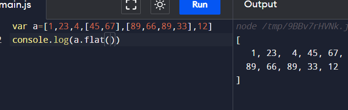
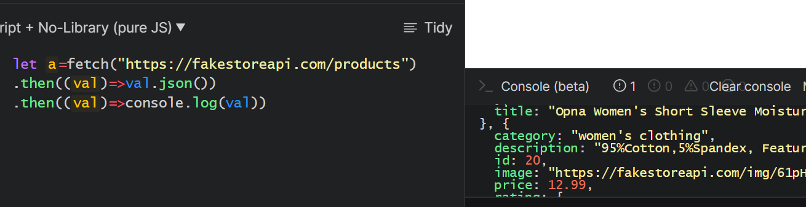

JS gives life for the page.It is used for Dynamic functionality. JavaScript is the world's most popular programming language.
js will execute line by line after completing and execyting one line it will go to another line if there is
any error then it will stop there. so it is called as Single Threaded language
For example:To clearly understand and remember why is js single threaded??
If we want to prepare any sweet so we will take carrot halwa as example We dont fry the carrots and do right
there is a certain process to do step by step we will first remove layer and then we will grate it and so on... so step by step
to remember easily i have took example carrothalwa as example.
What is Complier?
In simple words,human to machine understandable language.
What is interpretor?
An interpreter in the browser reads over the JavaScript code, interprets each line, and runs it.
What is Framework?
Collection of library is called framework. Example:Angular,React...
What is Library?
Javascript libraries is a file that contains a set of prewritten functions or codes that you can repeatedly use while executing JavaScript tasks.
Synchronous and Asynchronous in JavaScript 🤔
Synchronous
synchronous means to be in a sequence, i.e. every statement of the code gets executed one by one. So, basically a statement has to wait for the earlier statement to get executed. Example:
console.log('First');
console.log('Second');
console.log('Third');
Output:
First
Second
Third
Asynchronous
Asynchronous code allows the program to be executed immediately whereas the synchronous code will block further execution of the remaining code until it finishes the current one.
This may not look like a big problem but when you see it in a bigger picture you realize that it may lead to delaying the User Interface.It will run parallely. Example
console.log('first');
setTimeout(function(){
console.log("second");
},0)
console.log('third')
OUTPUT:
first
third
second
Synchronous
Asynchronous
Every statement in a function is executed sequentially.
Every statement in a function is not executed sequentially. It can also execute in parallel.
The execution of the next instruction depends upon the execution of the previous instruction.
The next instruction can execute while the previous one is still executing.
Synchronous is a single thread.
Asynchronous is multi-thread in nature.
Synchronous is slower in nature.
Asynchronous increases throughout as processes run in parallel.
what is console?😐
It prints output. The log() method writes (logs) a message to the console.It is used for testing purpose. SYNTAX:
console.log(message);
We will take a example of restaurant for CS Model,
Client-Seated person who comes to restaurant
Server-Who prepares food (Kitchen)
API-Waiter
when the client(person) orders food,the order will be accepted by (server) who prepares
food,so client will request for food and server will give response.
Client request sent →←server gives response
Common features in programming Languages
Variables
Datatypes
Operators
Control structures
Functions
VARIABLES 🤔
Variable are container which is used to store data.(or)
To store data temporarily we have a concept variables
DATATYPES 🤔
A data type is an attribute associated with a piece of data that tells a computer system how to interpret its value.
Datatypes have different types:
Alphabets
-Collection pf characters in quotation is called string('') or("")
Numbers
- (0-9)
Boolean
- (True or False)
🧐Primitive & Non-primitive Datatypes 🧐
PRIMITIVE:Primitive data types are basic and include such values as integers, boolean, characters and other simple stored memory types.
NON-PRIMITIVE:Nonprimitive data types are more complex values such as strings, objects, and arrays.
Example 1:
int a=10;---this is static(Means it is fixed and here a refer to integer)
a="Hello";---this is assigning
So from the above image if we are storing a=10 then it will take only int value only
because we have assigned it while declaring a is 10.
Example 2:
a=10-----;a=hello---(these are dynamic)
*In javascript we particularly name it as which type of number..
it will allow all types,but in java we should specify particularly which type of
number is it
OPERATORS 🧐
Arthematic
--(=,-,*,/,%)
Assignment
--(=,≠,==)(== it will check)
Logical
--(&&,||,!)
Comparisional
(>,=,>=)
Control strcutures?? 🧐🧐
It will control structures.
LOOPING 🧐
It will loop until we take further action on it.
Example:
choclate fountain--which we see in malls,theatres
it will go on until we off the switch loop continues....
CONDITIONAL STATEMENT 🧐
It allow a program to execute different blocks of code based on whether a certain condition is true or false
Example:
"If the rug is dirty, then the rug should be vacuumed." "The rug is dirty" is the hypothesis, and "the rug should be vacuumed" is the conclusion.
FUNCTIONS 🧐🤔
It is used for reusablity of code.Each function returns some value.Because of
reusablity the space will also reduce.
Example:
Consider a garden,in which it has 10 plants and they are far to each other
so the gardener keeps each tank beside it by that when ever he goes to that certain plant
he will take the water and pours water on it.....oops this is such a big process and takes
much time and space as well.. what should i do now 🙄
The best idea is keep a big tank which is sufficient for all the plants
and keep a pipe line and connect to each plant so that whenever the gardener
wants to plant water he just on it by this space and time will take less space as well
as time.(This is called as INVOCATION)
Time complexity--Less time
Space complexity--Less space
ohhhhh Whats Invocation is it different from calling 🤔
Noooo.... Both are same 🤩 Invocation--Calling a function when it is necessary
JAVASCRIPT🤔🤔🤔
WHAT??
WHERE??
WHY??
HOW??
WHAT---
Javascript is a scripting language.We use interpretor in this,the lines in
the code willmexecute line by line.When error comes it will stop.So it is called as Single Threaded Synchronous Dynamically typed language
WHERE---
JS is used in both Frontend as well as Backend also.
WHY---
JavaScript is so versatile that you can use it to easily add cool design elements such as animation, interactive maps, and scrolling video.
HOW--
JS is used in internal and external.
Internal-Using script tag.
External-In another file(index.js).
Defer???🤐
If we use defer keyword then we can write script tag anywhere...If we are not Internal-Using
then we have write at the last before body tag.
BOM 🤨
Browser Object Model
It is a collection of objects exposed by the browser that allow JavaScript to
interact with the browser window, document.
DOM 🤨
Document Object Model
It is a programming interface for web documents. It represents the
page so that programs can change the document structure, style, and content.
Variables 🤨
To store Data.It act as a container.Variables are categorised into 3 types:
Var
Const
Let
In this keywords,VAR is having life everywhere
In var we can re-assign
EX:a=10,a="hello"
If we are not assigned any value to a variable then defaultly undefined will be assigned
Declaration
var a,Here we are assigning 10 in a variable name
Initialization
Var a=10,Initializing a in 10(var)
Assigning
i=0,Means 0 is assigned to i.It is used to assign a value to a variable or property
Declaration+Assigning=Initialization
What is Hoisting🤔🤔
Every declaration what we declared will go to the top of the page before execution
(default Behaviour)
In terms of variables and constants, keyword var is hoisted and let and const does not allow hoisting.
In the above example, variable a is used before declaring it. And the program works and displays the output 5.
Console????🧐🧐🧐
The Console can be used to log information as part of the JavaScript development process,
as well as allow you to interact with a web page by carrying out JavaScript expressions within the page's context.
If there is an error in console,
For example:Conse.log(10)---It stops,it wont print.
What is scope??💯
Life of a variable There are 2 types of life:
Global
--Particular thing or person is having acessing everywhere.
LOcal
--It is having limited access.(Specific)
Arrays & Objects
Primitive
*In simple words primitive means basic.
*We cannot change primitive datatypes.
* It will store in stack(LIFO)
* Primitive data types are inmutable(we can not change them)
Non-Primitive
*In simple words non-primitive means complex.
*This is mutable(we can change the values)
Storing each value in each var it will take so much place so we use collection
& use Arrays and Objects.
To store all in one conatiner we use non-primitive data types.
What is Array?🧐
It is a collection of different datatypes seperated with a comma is called array.
* Array has an incomplete data.
*It is represented in square brackets[].
Example
var a=[1,2,56,"mounika",98];
Let's find out index value of "mounika" in the above array....
console.log(a[3]);
What is Objects?🧐
An object is a collection of related data. It is represented in square brackets{}.
* In objects we have key-pair values so we can understand clearly.
* In objects data will be complete and clear because of key value pairs.
Example
var a={
a1:"bonagiri",
b1:"mounika",
}
Console.log(a.a1); Output:
We can find (a.a1) output in another way also..
console.log(a["b1"]);
NOTE:
*In the place of a1 we can write numbers also...
What is heap??🧐
Random collection of data.
What is Null??🧐
It wont assign defaultly. we will assign it...(0)
What is Undefined??🧐
Defined but no assigned.
Ex:
Var a
Important
** Null+1=1
** Undefined+1=NaN.
Operators
An Operation between two operators.(a+b)Here,a and b are operands, + is the operation between them.
Arthematic Operator
In arthematic operators,we have (+,-,*,/,%,++,--).
Comparsional Operator
In Comparsional Operator,we have(>,<,<=,>=,==,==)
Logical Operator
In logical Operator we have (logical AND && , logical OR || , Logical NOT !)
Assignment Operator
In Assignment Operator,we have(=,+=,-=,*=,/=,%=,**=)
We will perform Increment and Decrement (pre and post) operators here...
Increment Pre
INPUT
OUTPUT
Increment Post
INPUT
OUTPUT
Decrement pre
INPUT
OUTPUT
Decrement Post
INPUT
OUTPUT
Arthematic Operator
Addition
Subraction
Multiplication
Division
Modulus
Comparisional Operator
Greater than
Lesser than
Greater than or equal to
Lesser than or equal to
double equal to
Logical Operator
Logical and (&&)
Logical or (||)
Logical not(!)
Ternary Operator
SYNTAX
Condition?"Expression 1":"Expression 2"
(Conditional Operator) is a concise way to write a conditional (if-else) statement.
Ternary Operator takes three operands i.e. condition, true value and false value.
EXAMPLE
Conditional Statements
These Statements are classified into 5 types:
If statement
If-else statement
Else if statement
Nested if statement
Switch case
If statment
It is used to specify a block of code to be executed,
if a specified condition is true
SYNTAX:
if (condition) {
// block of code to be executed if the condition is true
}
If-else statment
else statement to specify a block of code
to be executed if the condition is false.
SYNTAX:
if (condition) {
// block of code to be executed if the condition is true
} else {
// block of code to be executed if the condition is false
}
If-Else-if statment
else if statement to specify a new condition
if the first condition is false.
SYNTAX:
if (condition1) {
// block of code to be executed if condition1 is true
} else if (condition2) {
// block of code to be executed if the condition1 is false and condition2 is true
} else{
// block of code to be executed if the condition1 is false and condition2 is false
}
Nested-if
if statements inside if statements, this is called a nested if.
SYNTAX:
if condition1 {
// code to be executed if condition1 is true
if condition2 {
// code to be executed if both condition1 and condition2 are true
}
}
Switch-case
The switch statement is used to perform different actions based
on different conditions.
SYNTAX:
switch(expression) {
case x:
// code block
break;
case y:
// code block
break;
default:
// code block
}
Looping statements
It is classified into 3 types:
For loop
While loop
Do while
For-loop
The for statement creates a loop with 3 optional expressions
SYNTAX:
for (expression 1; expression 2; expression 3) {
// code block to be executed
}
The while loop loops through a block of code as long as a specified condition is true.
SYNTAX:
while (condition) {
// code block to be executed
}
Do While-loop
The do while loop is a variant of the while loop. This loop will execute the code block once, before checking if the condition is true,
then it will repeat the loop as long as the condition is true.
SYNTAX:
do {
// code block to be executed
}
while (condition);
FUNCTIONS🤔🤔
It is used to reuse the code.Using the code when necessary
*In JS function will act as a value.
*A JavaScript function is executed when "something" invokes it (calls it)..
*In functions we can pass primitive,non-primitive and function also,because
it can act as a value.
*Every function will return some value,
or else it will return undefined.
*Function also hoists.
*After writing return,no statements will execute..It is VOID area.
SYNTAX
function functionname(){
//code to be executed
}
Example below:when we call functionname()
When we call only function then.....
Invoking🤨🤨
The code inside the function will execute when
"something" invokes (calls) the function:
When an event occurs (when a user clicks a button)
When it is invoked (called) from JavaScript code
Automatically (self invoked)
Return🤨
When JavaScript reaches a return statement, the function will stop executing.
Parameters & Arguments
SYNTAX:
function functionName(parameter1, parameter2, parameter3) {
// code to be executed
}
Function parameters are the names listed in the function definition.
Function arguments are the real values passed to (and received by) the function.
Lets take an example using parameters and arguments and perform multiplication.
Let's take and example of default parameters
Types of functions
Named Function
Ananymous Function
Arrow Function
Immediate calling function
Named Function:
In JavaScript, named functions are simply a way of referring to a function that employs the function keyword followed by a name that can be used as a callback to that function.
Normal functions with a name or identifier are known as named functions.
Example:
Ananymous fnction:
As the name suggests, “anonymous function” refers to a function that does not have a name or a title. In JavaScript, an anonymous function is something that is declared without an identification. It’s the distinction between a regular and an anonymous function. An anonymous function cannot be accessed after it is created;
it can only be retrieved by a variable in which it is stored as a function value.
Example:
Arrow function
Arrow function {()=>} is concise way of writing JavaScript functions in shorter way. Arrow functions were introduced in the ES6 version. They make our code more structured and readable.
Arrow functions are anonymous functions i.e. functions without a name but they are often assigned to any variable. They are also called Lambda Functions.
Example:
Immediate Calling function
This type of function is called immediately invoked as these functions are executed as soon as they are mounted to the stack,
it requires no explicit call to invoke the function. If we look at the syntax itself we have two pairs of closed parentheses, the first one contains the logic to be executed and the second one is generally what we include when we invoke a function, the second parenthesis is responsible to tell the
compiler that the function expression has to be executed immediately.
Example:
We cannot hoist arrow and Ananymous function because it is attached to
a variable.
Immediately invoked is not hoisted, because it is immediately invoked so need of hoisting
Currying Concept
We simply wrap a function inside a function, which means we are going to return a function from another function to obtain this kind of translation. The parent function takes the first provided argument and returns the function that takes the next argument and this keeps on repeating till the number of arguments ends. Hopefully,
the function that receives the last argument returns the expected result.
Example:
Why is currying useful in JavaScript?
--It helps us to create a higher-order function.
--It reduces the chances of error in our function by dividing it into multiple smaller functions that can handle one responsibility.
--It is very useful in building modular and reusable code.
--It helps us to avoid passing the same variable multiple times.
--It makes the code more readable
Strings And its methods
What is String??
Collection of characters enclosed in double quotation
Ex:Var a="hello"
Strings are primitive types and they are immumtabe
We can find length of a string and know the index values
To know the ASCII values
a-z:97-122;A-Z:65-90
String Methods
charCodeAt :It knows the values of the particular index values
charAt :In charcat,we can know in which index what letter is present
toLowerCase : converts upper to lower
toUpperCase : converts lower to upper
repeat : repeats the name,according to the number we give
replace : replaces one letter with other
replaceall : replaces all the letters
trim : if we are having any spaces it trims and gives the length
concat : concats means it will add one with other
slice: it slices gives the piece of code what we need
substring :returns a new string containing characters from the original string
Array Methods
Push:add one or more elements to an array
Pop: removes the last element
Shift: removes the first element from array
Unshift:adds elements at the start
Concat:concats two arrays
flat:if we are having array in array then it will flat and gives in one array

slice:It will slice and we cant override we have to assign for new variable
splice:(start,how many values should be removed,what characters are to be added)
join: it joins with each character
Search Methods
Indexof:starting the search at fromIndex, or -1 if the value is not found.
Lastindexof: searching backwards from fromIndex, or -1 if the value is not found.
search:Executes a search for a match between a regular expression and this String object.
match: Retrieves the result of matching a string against a regular expression.
includes:Determines whether one string may be found within another string.
startswith:Determines whether a string begins with the characters of a specified string, returning true or false as appropriate.
endswith:Determines whether a string ends with the characters of a specified string, returning true or false as appropriate.
Objects
objects are structured and understandable language,to understand
data clearly we write in the form of key value pairs seperated with comma
in objects we can find keys,values and total data with entries
Lets see this all in one example
Var,Let,Const
Var keyword
The var is the oldest keyword to declare a variable in JavaScript. It has the Global scoped or function scoped which means variables defined outside the function can be accessed globally, and variables defined
inside a particular function can be accessed within the function.
Let keyword
The let keyword is an improved version of the var keyword. It is introduced in the ES6 or EcmaScript 2015. These variables has the block scope.
It can't be accessible outside the particular code block ({block}).
Const keyword
The const keyword has all the properties that are the same as the let keyword, except the user cannot update it and have to assign it with a value at the time of declaration. These variables also have the block scope. It is mainly used to create constant variables
whose values can not be changed once they are initialized with a value.
Difference between var,let,const
Synchronous And Asynchronous
Synchronous
As the name suggests synchronous means to be in a sequence, i.e. every statement of the code gets executed one by one.
So, basically a statement has to wait for the earlier statement to get executed.
Asynchronous
Asynchronous code allows the program to be executed
immediately whereas the synchronous code will block
further execution of the remaining code until it finishes the current one.
This may not look like a big problem but when you see it
in a bigger picture you realize that it may lead to delaying the User Interface.
event loop will check js stack that it is empty or not
if empty it will run or else who is there in queue it will execute.
We can access & manipulate elements and browser with BOM and DOM
BOM: Browser Object Model
DOM:Document Object Model
Js is platform independent,we can access elements by:
getelementbyid
getelementbyclassname
getelementbytagname
queryselector
queryselectorall
CRUD-create,read,update,delete elements...
InnerText vs Inner Html
Innertext
The innerText property sets or returns the text content of the specified element and its descendants.
It returns only the visible text contained within the element, excluding any HTML markup.
InnerHtml
he innerHTML property sets or returns the HTML content (including tags) of the specified element and its descendants.
It returns the entire HTML content contained within the element, including any HTML markup and text.
Appendchild:
The appendChild() method in JavaScript
is used to append a node as the last child of a specified parent node.
BOM
Browser Object Model (BOM) is a programming interface
JavaScript tool for working with web browsers.
This enables access & manipulation of the browser window,
frames, and other browser-related objects by facilitating the JavaScript code.
The main object is “window,” which helps to interact with the browser. By default, you can call window functions directly.
Window Object Model-- Represents the browser window and serves as the main tool for interaction within the Browser Object Model (BOM).
History Object Model-- Enables navigation control by keeping track of the user’s browsing history in the Browser Object Model (BOM).
Screen Object Model-- Offers information about the user’s screen, like its size, within the Browser Object Model (BOM).
Navigator Object Model-- Provides details about the user’s browser and system characteristics within the Browser Object Model (BOM).
Location Object Model-- Manages the current web address (URL) and allows changes within the Browser Object Model (BOM).
Other window methods
window.open()- This method is used to open a new tab or window with the specified URL and name.
window.close()- This method is used for closing a certain window or tab of the browser that was previously opened by the window.open( ) method.
window.moveTo() -This method is used in the window to move the window from the left and top coordinates.
window.resizeTo() -This method is used to resize a window to the specified width and height
EVENTS
Action to be performed in a Webpage.events are nothing but functions
or operators creating some actions we need events...
Events is categorised into different types.. they are..
Mouse Events:
click: Fires when a mouse button is clicked.
dblclick: Fires when a mouse button is double-clicked.
mouseover: Fires when the mouse pointer enters an element.
mouseout: Fires when the mouse pointer leaves an element.
mousedown: Fires when a mouse button is pressed down.
mouseup: Fires when a mouse button is released.
Keyboard Events:
keydown: Fires when a key is pressed down.
keyup: Fires when a key is released.
keypress: Fires when a key is pressed.
Form Events:
submit: Fires when a form is submitted.
change: Fires when the value of an input element changes.
input: Fires when the content of an input element changes.
focus: Fires when an element receives focus.
blur: Fires when an element loses focus.
Window Events:
load: Fires when the browser finishes loading all resources in the window.
resize: Fires when the browser window is resized.
scroll: Fires when the user scrolls the window.
unload: Fires when the user navigates away from the page.
localStorage:
The localStorage object allows you to store key-value pairs in the browser's local storage. Data stored using localStorage persists even after the browser is closed and reopened, as long as it is not explicitly cleared.
Data stored in localStorage is scoped to the origin (i.e., the combination of protocol, domain, and port) and is accessible to any JavaScript code from the same origin.
The data stored in localStorage remains available until it is manually cleared by the user or removed programmatically.
Example usage:
sessionStorage:
The sessionStorage object provides similar functionality to localStorage, but the data stored using sessionStorage is scoped to the current session. This means that data stored in sessionStorage is available only for the duration of the page session. Once the browser tab or window is closed, the data is cleared.
Like localStorage, data stored in sessionStorage is accessible to any JavaScript code from the same origin.
Example usage:
Predefined Methods are:
Map:The map() method creates a new array by applying a function to each element of the calling array and returning the results in a new array. It does not change the original array.
Filter:The filter() method creates a new array with all elements that pass the test implemented by the provided function.
Find:The find() method returns the first element in the array that satisfies the provided testing function. Otherwise, it returns undefined.
Findindex:The findIndex() method returns the index of the first element in the array that satisfies the provided testing function. Otherwise, it returns -1.
reduce:The reduce() method applies a function against an accumulator and each element in the array (from left to right) to reduce it to a single value.
some:The some() method tests whether at least one element in the array passes the test implemented by the provided function. It returns true if at least one element passes the test; otherwise, it returns false.
Every:The every() method tests whether all elements in the array pass the test implemented by the provided function. It returns true if all elements pass the test; otherwise, it returns false.
ES6 Features:
Destructuring
Destructuring allows you to extract values from arrays or properties from objects into distinct variables.
Spread
: The spread syntax (...) allows an iterable (like an array or string) to be expanded in places where zero or more arguments or elements are expected. It's commonly used to make copies of arrays or to merge arrays or objects.
Rest
The rest syntax (...) allows you to represent an indefinite number of arguments as an array. It's often used in function parameters to handle a variable number of arguments.
setTimeout
The setTimeout() function is used to execute a specified function after a specified delay (in milliseconds). It's commonly used for asynchronous execution of code or for implementing delays in code execution.
setinterval
The setInterval() function repeatedly executes a specified function at specified intervals (in milliseconds) until it's cleared. It's commonly used for tasks that need to be performed at regular intervals, such as animations or periodic updates.
Callback Hell
Callback Hell is essentially nested callbacks stacked below one another forming a pyramid structure. Every callback depends/waits for the previous callback, thereby making a pyramid structure that affects the readability and maintainability of the code.
Example
Promise
JavaScript Promise are easy to manage when dealing with multiple asynchronous operations where callbacks can create callback hell leading to unmanageable code. Prior to promises events and callback functions were used but they had limited functionalities and created unmanageable code. Multiple callback functions would create callback hell that leads to unmanageable code. Promises are used to handle asynchronous operations in JavaScript.
Javascript promise have 4 types of states:
1.fulfilled: Action related to the promise succeeded
2.rejected: Action related to the promise failed
3.pending: Promise is still pending i.e. not fulfilled or rejected yet
4.settled: Promise has been fulfilled or rejected
Example
Async Await
Async/await is a feature in JavaScript that allows you to work with asynchronous code in a more synchronous-like manner, making it easier to write and understand asynchronous code.
Async Functions always return a promise. Await Keyword is used only in Async Functions to wait for promise.
Example
Fetch
The JavaScript fetch() method is used to fetch resources from a server. It returns a Promise that resolves to the Response object representing the response to the request.
The fetch method can also make HTTP requests- GET request (to get data) and POST request (to post data). Fetch also integrates advanced HTTP concepts such as CORS and other extensions to HTTP.
Parameters:
URL: The URL to which the request is to be made.
Options: It is an array of properties. It is an optional parameter. Options available are:
Method: Specifies HTTP method for the request. (can be GET, POST, PUT or DELETE)
Headers
Body: Data to be sent with the request.
Mode: Specifies request mode(eg. cors, nocors, same-origin, etc)
Credentials: Specifies whether to send user credentials (cookies, authentication headers, etc.) with the request
There are different types of methods.they are:
GET Method: Retrieves data from a specified resource.
POST Method: Submits data to be processed to a specified resource.
PUT Method: Updates or replaces a resource identified by the specified URL.
DELETE Method: Deletes the specified resource.
PATCH Method: Applies partial modifications to a resource.
OPTIONS Method: Describes the communication options for the target resource.
TRACE Method: Echoes the received request, useful for diagnostic purposes.
Example

Map
Map is a built-in JavaScript data structure that allows you to store key-value pairs.
It provides an ordered collection where each key can be any value , and each key can only appear once.
Set
It doesnt take duplicates,filter out and gives the values
Nullish coalescing
Nullish coalescing is an operator (??) used to provide a default value if a variable is null or undefined.
optional chaining
Optional chaining (?.) allows accessing nested properties without causing errors if an intermediate property is null or undefined.
OOPS-Object Oriented Programming language
Objects :
Objects are entities in JavaScript that contain properties and methods. They are used to represent real-world entities or abstract concepts
, and they can store data and perform actions.
class :
A class is a blueprint for creating objects with predefined properties and methods. It serves as a template or prototype for objects and allows for the creation of multiple instances with similar characteristics.
Inheritance :
Inheritance is a mechanism in object-oriented programming that allows a class (subclass) to inherit properties and methods from another class (superclass). It promotes code reusability and establishes a hierarchical relationship between classes.
Encapsulation :
Encapsulation is the bundling of data (attributes or properties) and methods (functions) that operate on the data into a single unit (class). It allows for data hiding and provides control over access to the data, enforcing the principle of information hiding.
Abstraction :
Abstraction is the process of simplifying complex systems by hiding unnecessary details and exposing only essential features. It focuses on what an object does rather than how it achieves it, allowing for higher-level understanding and easier maintenance.
Polymorphism :
Polymorphism is the ability of objects to take on different forms or behaviors based on their context. It allows methods to be defined in a superclass and overridden in subclasses, enabling flexibility and dynamic behavior in object-oriented systems.